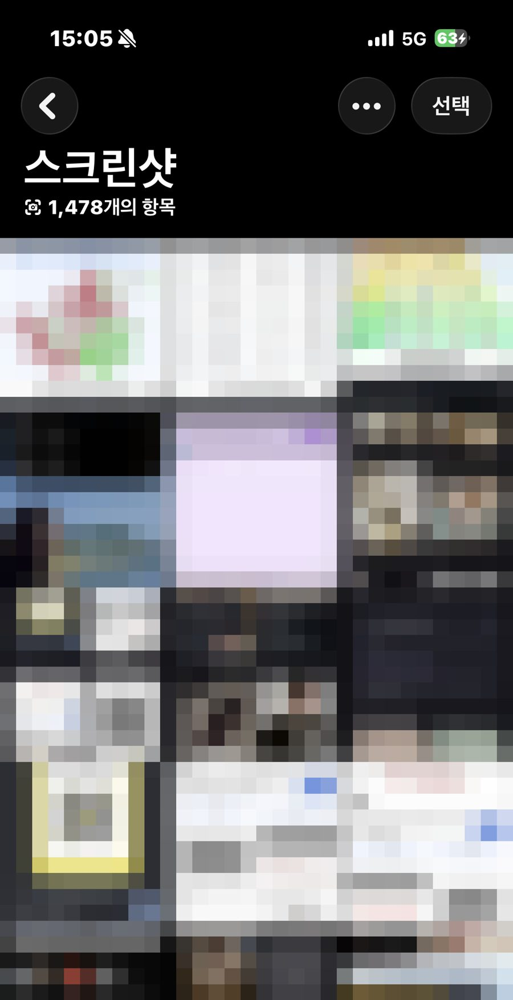
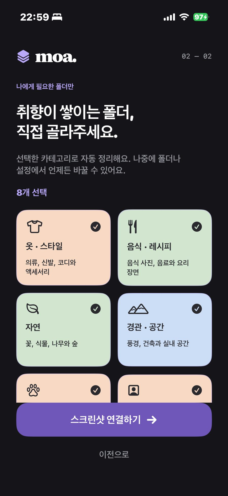
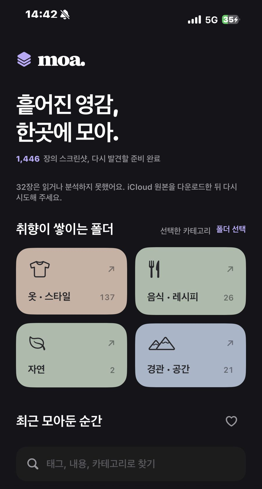
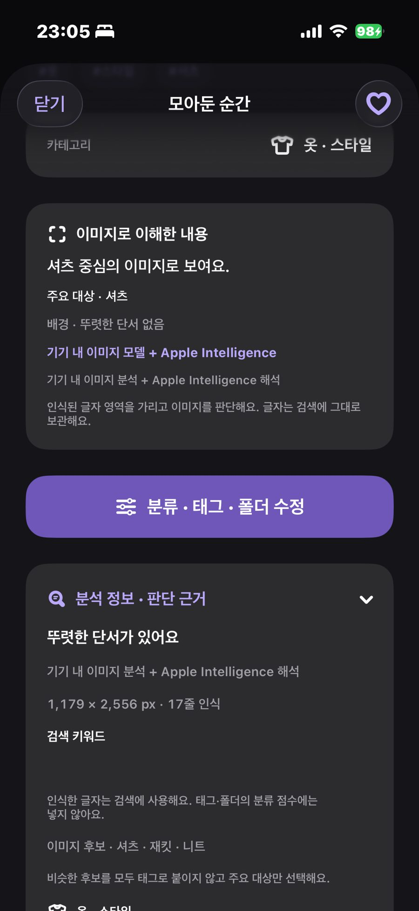

프론트엔드 개발자가 Swift 한 줄 안 써보고 iOS 앱을 만들어 심사에 올리기까지 반나절이 걸렸다. 자랑하려는 건 아니고, 그 반나절 동안 어디서 막혔는지에 대한 기록이다.
갤러리를 한번 열어보시길
지금 폰에서 스크린샷 폴더를 열어보면 좋겠다. 몇 장쯤 쌓여 있는지, 그리고 그중에 지난 한 달 동안 다시 열어본 게 몇 장인지.
나는 1,478장이 쌓여 있었는데 다시 열어본 건 손에 꼽을 정도였다.

격자는 모자이크로 가렸지만 가리기 전 화면도 대충 이런 인상이었다. 무엇이 어디 있는지 알 수 없는 색 덩어리.
지식부채가 쌓이는 방식
나는 정보를 스크린샷으로 모으는 사람이다. 주식 얘기든 부동산 정책이든 개발 꿀팁이든, SNS를 타고 흘러오는 것들 중에 “이건 나중에 읽어야지” 싶거나 “이건 사람들한테 공유해야지” 싶은 게 보이면 일단 찍어두곤 했다.
스크린샷을 찍는 순간에는 묘한 안정감이 생긴다. 이 지식이 서버 어딘가가 아니라 내 디바이스 안으로 들어왔다는 감각인데, 그게 은근히 중독성이 있어서 점점 더 많이 찍게 되더라.
문제는 그 안정감이 전부 착각이었다는 거다.
찍어둔 정보는 다시 꺼내 쓰이지 않았고, 같은 내용을 두 번 세 번 찍은 것들이 계속 쌓여갔다. 쌓이는 속도가 소비하는 속도를 아득히 앞지르다 보니 나중에는 필요할 때 찾지도 못하는 상태가 됐고, 어쩌다 찾아도 내가 왜 이걸 찍었는지 맥락이 안 보이는 경우가 많았다.
쌓이기만 하고 상환은 안 되는 지식부채, 딱 그 상태였다.
왜 “저장하기”가 아니라 스크린샷이었나
여기까지 읽으면 이런 생각이 들 것 같다. 앱마다 저장 기능이 다 있는데 왜 굳이 스크린샷을 찍느냐고.
당연히 써봤다. 인스타 저장도 하고, 각종 앱의 “나중에 보기”나 “스크랩”도 열심히 눌러봤는데 결국 안 되더라. 이유는 하나였다.
저장 기능은 그 앱 안에 갇혀 있다는 것.
내가 정보를 얻는 앱이 열 개면 저장소도 열 개가 되는 셈인데, 각각 위치도 다르고 UI도 다르고 들어가는 경로도 달라서 뭘 어디에 저장해뒀는지 기억하는 것부터가 일이 된다. 획일화된 관리가 애초에 불가능한 구조였다.
반면 스크린샷은 앱을 가리지 않는다. 어디서 찍든 한 곳에 모이고, 저장하는 행위 자체의 비용도 버튼 하나로 제일 싸다. 그래서 나는 자연스럽게 스크린샷으로 수렴했던 거다. 관리는 안 되지만 수집만큼은 확실하게 되는 방식으로.
→ 수집 비용이 제일 싼 방식을 택한 대가로, 관리 비용을 전부 미뤄둔 셈이었다.
그래서 Moa를 만들었다
정리되지 않는 나의 지식 정보, 제가 잘 Moa 관리할게요.
Moa가 하는 일은 크게 세 가지다.
첫째, 온디바이스 컨텐츠 분석 기반 자동 분류. 사진을 서버로 보내지 않고 기기 안에서 이미지를 분석해서 카테고리로 나눈다.
둘째, 텍스트와 바코드 인식 기반 검색. Vision 프레임워크로 이미지에서 뽑아낸 텍스트와 바코드를 메타정보로 붙여두기 때문에, 날짜가 아니라 내용으로 찾을 수 있다.
셋째, 접근성 좋은 UI. 정리 도구인데 정리하는 데 품이 들면 결국 안 쓰게 되니까, 열자마자 바로 보이는 구조를 목표로 잡았다.
사용 흐름
설치
↓
온보딩에서 원하는 대분류 선택 (예: 옷·스타일, 사람 얼굴)
↓
선택한 카테고리로 자동 정리, 나머지는 '미분류'로
↓
다음 실행부터는 정리된 폴더를 보거나 검색으로 바로 찾기
처음 설치하면 어떤 대분류를 쓸지 먼저 고르게 된다. 옷·스타일, 음식·레시피, 자연, 경관·공간, 동물, 사람 얼굴, 문서, 바코드·티켓을 기본으로 제안하고, 탈것이나 그림·일러스트, 제품·소품, 지도는 원하면 추가로 켠다. 고르지 않은 카테고리에 해당하는 스크린샷은 억지로 다른 폴더에 끼워 넣지 않고 미분류 폴더로 보낸다. 그다음부터는 앱을 열 때마다 정리된 폴더가 보이니까, 그 스크린샷이 원래 담고 있던 정보를 다시 꺼내 쓸 수 있게 된다.


위 화면은 내 iPhone 15 Pro에서 실제 스크린샷을 돌린 결과다. 사진 앱의 1,478장 중 1,446장을 읽었고, iCloud에만 있는 원본 32장은 네트워크 접근을 끊어둔 탓에 읽지 못했다고 앱이 알려준다. 옷·스타일이 137장으로 압도적인 건 내 스크린샷 취향이 그렇다는 뜻이다. 그 아래 ‘최근 모아둔 순간’에는 실제 썸네일이 이어지는데 개인 화면이라 잘랐다.
스펙
| 항목 | 내용 |
|---|---|
| 플랫폼 | iOS 18 이상, iPhone 전용 (SwiftUI) |
| 외부 의존성 | Swift 패키지 0개 |
| 백엔드 | 없음 |
| 저장소 | 로컬 스토리지 (앱 지원 디렉터리의 JSON, iCloud 백업 제외) |
| 추론 | 전부 온디바이스. Vision(OCR·바코드) + 번들 TinyCLIP(약 40MB) |
| 개발 기간 | 1일 |
| 상태 | 앱스토어 심사 중 |
여기서 제일 중요한 건 백엔드가 없다는 점이다. 사진이 기기를 벗어나지 않으니 프라이버시 문제가 원천적으로 없고 서버 비용도 0원인데, 대신 이 결정이 뒤에 나올 모든 병목의 원인이 되기도 했다.
만든 순서
기획 연구 → 디자인 목업 → 디자인 선반영 → 기술 스펙 정리
→ 서비스 개발 → 고도화 → 사용자 테스트 → 배포
AI 도구는 구간을 나눠서 썼다.
초반 기획과 기술 검토 단계에서는 Codex를 붙였는데, “스크린샷이 이래서 불편하다”는 문제를 던져놓고 기술적으로 어떤 분류 방법론이 있는지 조사하면서 최적안을 좁혀나가는 데 주로 사용했다. 그렇게 디자인이 나오고 기술 가닥이 어느 정도 잡힌 뒤, 그러니까 한 사이클이 돌아간 시점부터는 Claude Code로 넘어가서 실제 구현을 붙였다.
내가 직접 한 건 요구사항 정의였다. 사용자가 뭘 불편해하고 뭘 원하는지는 AI가 대신 정해줄 수 없었다. 정확히 말하면 정해주긴 하는데, 그렇게 하는 순간 그건 더 이상 내 앱이 아니게 되더라.
→ AI한테 “무엇을”은 못 맡기겠더라. 대신 “어떻게”는 거의 다 맡겼다.
막힌 곳 하나 — 앱 이름으로 분류하려다 접었다
처음에 구상했던 대분류 기준은 앱이었다.
카카오톡에서 찍은 것, 증권 앱에서 찍은 것, 인스타에서 찍은 것처럼 출처별로 폴더가 나뉘면 꽤 직관적일 거라고 생각했다. 실제로 내가 스크린샷을 찍는 맥락 자체가 앱 단위에 가깝기도 했고.
그런데 구현 방법을 파고들다 보니 길이 막혀 있었다. 스크린샷은 자기가 어느 앱에서 찍혔는지 알려주지 않는다. 모바일 보안 정책상 스크린샷 메타데이터에 AppName 같은 필드가 아예 없다.
그래서 우회로를 하나씩 찾아봤는데 전부 조금씩 무너졌다.
파일명을 파싱해보려 했더니 기기마다 스크린샷 파일명 규칙이 달랐다. 안드로이드와 iOS가 다른 건 물론이고 같은 안드로이드 안에서도 제조사마다 제각각이었다. 일부 삼성 기기는 파일명 뒤 postfix에 앱 이름을 붙여준다고 해서 기대를 걸어봤지만, 앱 이름이 한글일 경우에는 그 규칙마저 동작하지 않는다는 걸 알게 됐다.
첫 빌드에는 실제로 타협안이 들어가 있었다. 화면 상단에서 Instagram, TikTok, YouTube, Pinterest처럼 독립적으로 찍힌 브랜드 표기를 OCR로 읽었을 때만 출처를 추정하고, 나머지는 전부 ‘알 수 없는 앱’으로 두는 방식이었다. 동작은 했지만 로고가 없는 화면은 전부 ‘알 수 없는 앱’으로 남는 구조였고, 한 시간쯤 뒤 커밋에서 이 기능과 화면을 통째로 지웠다.
남은 건 런타임에서 레이아웃과 컨텐츠 스타일을 학습해서 “이건 카카오톡이다”를 추론하는 방식이었다. 기술적으로는 충분히 가능한 방법이었고, 사실상 유일한 현실적 선택지이기도 했다.
그런데 여기서 멈췄다. 학습이 고착화되지 않는다는 게 걸렸다.
신규 앱이 나오면 학습 데이터에 없으니 못 잡고, 기존 앱이 UI를 개편하면 그동안 쌓아둔 학습이 그대로 무너진다. 앱 리디자인 한 번에 분류 정확도가 통째로 날아가는 구조를 1인 개발로 계속 따라다니며 유지보수할 자신이 없었다.
그래서 앱 기준 대분류는 포기하고 독립적인 키워드 기준으로 방향을 완전히 틀었다.
옷·스타일 / 음식·레시피 / 자연 / 경관·공간 / 동물 / 사람 얼굴 / 문서 / 바코드·티켓 / 탈것 / ...
키워드는 앱 UI가 바뀌어도 안 무너진다. 사진 바깥의 출처가 아니라 사진 안에 있는 것 자체를 보기 때문이다.
→ 정확한데 깨지기 쉬운 것보다, 조금 뭉툭해도 안 깨지는 쪽을 골랐다.
막힌 곳 둘 — 온디바이스 추론의 정확도
제일 오래 붙잡고 있었던 문제다.
이미지에서 텍스트 기반 메타정보를 뽑고 그걸로 카테고리를 판정하는 구조였는데, 추론 결과의 가중치가 사람이 보는 것과 잘 안 맞았다.
제일 기억에 남는 케이스가 있다. 인스타그램에서 어떤 사람이 옷을 광고하는 게시물을 찍은 스크린샷이었는데, 이걸 사람이 보면 당연히 “옷”이다. 옷을 보려고 찍은 거니까. 그런데 모델은 화면의 대부분을 차지하는 사람 쪽에 높은 점수를 준다. 스타일이 중심인지 인물이 중심인지를 가리는 그 중요도 판정에서 오차 범위가 심하게 벌어졌고, 그러니 분류가 제대로 될 리가 없었다.
시도해본 것
외부 AI 서버로 돌리면 정확도야 올라가겠지만 그만큼 비용이 붙는다. 사용자 한 명이 수천 장을 한 번에 돌리는 앱에서 장당 과금은 말이 안 되니, 온디바이스는 타협 대상이 아니라 아예 전제 조건이었다.
그래서 먼저 Apple의 Vision 프레임워크를 붙여봤다. iOS에 기본 내장돼 있고 별도 모델을 번들에 넣을 필요도 없으니 온디바이스 조건에는 더할 나위 없이 맞는 선택이었다.
왜 안 됐나
Vision으로 파이프라인을 짜면 자연스럽게 텍스트 인식(VNRecognizeTextRequest) 결과에 기대게 된다. 스크린샷은 애초에 텍스트가 많은 이미지라 뽑히는 정보량 자체가 압도적이고, 그러다 보니 판정이 계속 그쪽으로 끌려갔다. 초기 규칙에는 OCR에 flower가 있으면 자연 쪽 점수를 올리는 키워드 표가 있었는데, FLOWER라고 크게 인쇄된 셔츠 사진이 자연 폴더로 가지 않는지 확인하는 테스트가 지금도 남아 있다.
이미지 분류(VNClassifyImageRequest) 쪽도 써봤지만 이번엔 다른 문제가 있었다. 결과로 떨어지는 라벨이 미리 정해진 범용 분류 체계라서, 내가 만들고 싶었던 카테고리와 입자 크기가 안 맞았다. “person”이나 “clothing” 같은 라벨은 나오는데 그 둘 중 무엇이 이 스크린샷의 의도인지는 알려주지 않는다. 게다가 스크린샷에는 “screenshot”, “document”, “text” 같은 매체 라벨이 거의 항상 최상위로 붙어서, 이걸 걷어내는 제외 목록부터 만들어야 했다.
결국 “이 사진에 무엇이 찍혀 있는가”를 묻고 싶었는데, 돌아오는 건 “이 사진에 어떤 글자가 있는가”와 “이 사진에 어떤 사물들이 있는가”였다. 둘 다 내가 원한 질문이 아니었다.
최종 해결
결국 TinyCLIP을 앱 번들에 넣었다.
이미지와 텍스트를 같은 임베딩 공간에 놓고 비교하는 모델이라, Vision과 달리 내가 정한 키워드를 직접 질문으로 던질 수 있다. “이 사진이 ‘옷’에 얼마나 가까운가”를 물으면 그에 대한 점수가 나오는 구조다.
미리 정해진 라벨 집합을 받아쓰는 게 아니라 내가 카테고리를 정의하고 그 기준으로 점수를 매기는 방식이라, 앞서 키워드 기반 분류로 방향을 튼 것과도 딱 맞아떨어졌다. 경량 모델이라 온디바이스라는 전제도 깨지지 않았고.
모델 후보로는 Apple의 MobileCLIP도 봤는데, 코드는 열려 있어도 공개 가중치는 연구 전용 라이선스라 스토어에 올리는 앱에 넣기 어려웠다. TinyCLIP은 모델과 가중치가 모두 MIT여서 이쪽으로 정했다. 앱에는 이미지 인코더와 미리 계산해둔 개념 벡터만 Core ML로 변환해 넣고(INT8 가중치, 약 40MB), 텍스트 인코더와 토크나이저는 빌드 단계에서만 쓰고 앱에는 넣지 않았다. 개념은 “a person showing a fashionable clothing outfit”처럼 카테고리마다 문장 두어 개로 적어두는데, 이 문장 목록이 곧 내 분류 기준이다.
앞의 “사람이냐 옷이냐” 문제는 두 가지로 눌렀다. 하나는 OCR로 잡은 글자 영역을 분석용 사본에서 가려서, 이미지 모델이 픽셀 속 문구를 읽고 주제를 바꾸는 영향을 줄이는 것. 다른 하나는 Vision의 saliency로 잡은 주요 영역을 따로 한 번 더 추론해서 전체 화면 점수와 섞는 것이다. 주요 영역 쪽에 가중치를 더 준다.
let values = concepts.indices.map { index -> (ImageConcept, Double) in
let weight = 0.65
return (concepts[index], focus[index] * weight + full[index] * (1 - weight))
}
// Cosine similarity is a ranking signal, NOT a calibrated probability.
// Keep uncertain / text-only / out-of-vocabulary images unclassified.
let accepted = first.0.category != .other && first.1 >= 0.23 && first.1 - competitor >= 0.018마지막 줄이 이 앱의 태도다. 1등 후보가 약하거나 2등과 차이가 거의 없으면 억지로 어디에 넣지 않고 미분류로 남긴다. 코사인 유사도는 순위를 매기는 신호일 뿐 정답 확률이 아니라서, UI에도 정확도 퍼센트 같은 건 표시하지 않았다.
텍스트 인식과 바코드 인식은 그대로 Vision을 쓴다. 이 둘은 Vision이 확실히 잘하는 영역이라 굳이 갈아탈 이유가 없었다. 분류 판정만 TinyCLIP으로 넘긴 셈이다. 바코드는 한 걸음 더 나가서, 감지되면 이미지 모델 점수와 관계없이 바코드·티켓 폴더로 보내되 코드 내용은 읽지도 저장하지도 않는다.

적용 전 화면은 남겨두지 않아서 전후 비교 이미지는 없다. 대신 상세 화면에 판단 근거를 그대로 노출하도록 했다. 어떤 후보가 경쟁했고 글자는 어디에 쓰였는지 보이면, 틀렸을 때 왜 틀렸는지 내가 이해할 수 있기 때문이다.
여기에 3시간을 썼다. 전체 개발이 하루였으니 하루의 8분의 1을 이 문제 하나에 쓴 셈인데, 솔직히 나머지 시간은 거의 흘러갔다고 봐도 된다.
→ 한 번 정한 제약을 끝까지 안 놓으면, 해법은 결국 그 안에서 찾아지더라.
반나절이라는 숫자
심사에 올리기까지 반나절이 걸렸는데, 이 숫자가 나한테 의미 있는 이유는 좀 다른 데 있다.
예전 같았으면 모바일 앱을 만들기 위해 Swift나 Kotlin부터 배워야 했을 거다. 언어만 안다고 되는 것도 아니어서 모바일 플랫폼에서 다루는 아키텍처와 코드 패턴까지 익혀야 했고, 거기서 프로덕션 레벨까지 가려면 또 한참이 걸렸다. 그 러닝커브를 이번에는 통째로 건너뛰고 마켓에 올렸다.
현업에 있으면 각 파트의 전문 지식이 맞물려야 비로소 서비스가 나온다는 걸 자주 체감하게 된다. 디자인, 모바일 정책, 플랫폼 아키텍처 같은 것들 말이다. 그걸 몰라도 된다는 게 이번에 제일 크게 다가온 부분이었고, 인정할 수밖에 없는 변화이기도 했다.
물론 “몰라도 된다”가 “아무것도 안 해도 된다”는 뜻은 아니다. 위에 적은 두 개의 병목은 결국 뭘 포기하고 뭘 지킬지를 정하는 판단이었는데, 그건 여전히 사람 몫으로 남아 있었다.
Moa를 쓰면서 달라진 것
개발자다 보니 SNS로 새 기술을 습득하려고 나름 노력하는 편인데, 아직 관심이 붙지 않았거나 당장 급하지 않으면 일단 스크린샷부터 찍고 보는 습관이 있었다.
Moa를 쓰고 나서는 분류된 폴더를 보면서 미뤄뒀던 기술부채를 다시 학습하는 시간이 생겼다. 쌓아두기만 하던 걸 꺼내 쓰는 루프가 처음으로 돌기 시작한 셈이다.
부수적으로 바코드 분류가 생각보다 유용했는데, 아직 유효한 바코드인지 이제 지워도 되는 건지가 한눈에 구분된다.
벤치마킹은 일부러 안 했다
비슷한 앱을 찾아보지 않았다.
벤치마킹을 하면 경쟁 제품과의 유사점이나 차별점이 정리되긴 하는데, 1차 개발 단계에서 그걸 해버리면 내 앱이 가진 독창성이 무너지는 게 눈에 보인다. 그게 보기 싫었고, 그냥 만들고 싶었다.
어느 정도 안정화가 되고 나서 사용성 측면에서 개선할 부분이 생기면, 그때 해도 늦지 않다고 본다.
하고 싶은 말
단어든 문서든 맥락이든, 요새는 주는 힘이 강하면서도 워낙 방대해서 우선순위를 잡기가 참 어렵다. 그래서 다들 중간에 접게 되는 것 같다.
그런데 디자인이 밉고 코드가 마음에 안 들더라도, 심지어 실패하더라도 한 사이클은 끝까지 굴려보는 게 좋다. 그것만으로도 꽤 많은 진척이 생긴다. 그렇게 정립된 기반과 기획을 바탕으로 새 프로젝트를 다시 다지는 쪽이 훨씬 편하기 때문이다.
더러운 환경에서 깔끔한 꽃을 바라지는 말자. 새로 시작하는 게 AI든 사람이든 모두 편하다.
다음 계획
지금 프로젝트는 iOS 스크린샷 폴더를 기준으로 원본 유지를 전적으로 보장하고 있다. 사진 앱의 앨범과 원본은 읽기만 하고 한 번도 쓰지 않는다. 다만 사용자 입장에서는 원본을 수정하거나 지우고 싶은 니즈가 분명히 있을 테니, 서비스 적합성 여부를 조사하는 중이다. 안드로이드 런칭도 함께 고려하고 있다.
관련 기록
- Moa 프로젝트 기록
- 포트폴리오 요약
- App Store: [확인 필요: 심사 통과 후 링크 추가]
피드백 환영합니다.